地政学
カラチはアラビア海に開く国家最大の港で、インダス流域、湾岸、中央アジア航路を結びます。連邦政治の首都ではありませんが、税収、金融、輸入、海軍、移民の動きが集中し、パキスタンの対外接続を担う都市です。

🇵🇰 パキスタン / 南アジア / World City Atlas
2023年国勢調査で人口約2,038万人のパキスタン最大都市。アラビア海の港湾、金融、繊維、移民労働、宗教行事、海岸の余暇、水不足と洪水リスクが同じ都市圏で重なります。
都市の骨格
カラチはパキスタンの玄関口であり、インダス川流域の生産、内陸の市場、湾岸への移動を海へつなぐ都市です。港と金融街の近さが、国の経済と日々の暮らしを強く結びます。
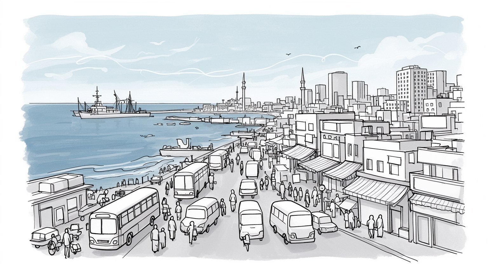
カラチはアラビア海に開く国家最大の港で、インダス流域、湾岸、中央アジア航路を結びます。連邦政治の首都ではありませんが、税収、金融、輸入、海軍、移民の動きが集中し、パキスタンの対外接続を担う都市です。
港湾、銀行、証券、繊維、食品、印刷、輸送、倉庫、小売が密接に重なります。工場労働者、港湾作業者、運転手、家事労働者、露店商、専門職が同じ都市を支え、非公式経済も大きな雇用の受け皿で、都市の日常です。
ムスリム多数の都市でありながら、シンド、ムハージル、パシュトゥン、バローチ、グジャラート系、キリスト教徒、ヒンドゥー教徒の記憶が重なります。霊廟、モスク、市場、音楽、食の習慣が都市の暦を形作る場所です。
海岸、公園、屋台、旧市街、霊廟、近代建築は訪問者を引きつけますが、住民には水不足、停電、治安、交通渋滞、家賃、洪水が身近です。観光の魅力は、港町の開放感と生活の緊張を同時に見ることで深まる都市です。
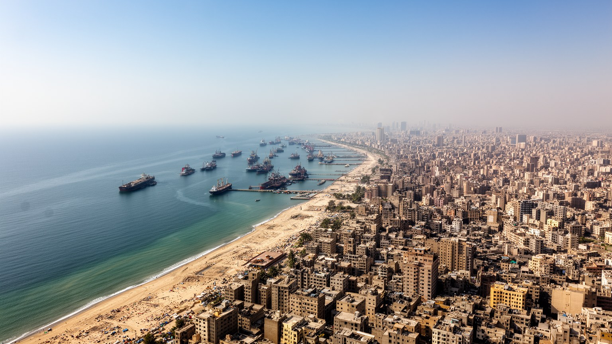
カラチの重要性は、アラビア海に面した港湾都市であることから始まります。パキスタンの首都はイスラマバードですが、輸入品、燃料、機械、穀物、繊維製品、金融取引の多くはカラチを通って国内へ広がります。港は単なる荷役施設ではなく、インダス川流域の農業、パンジャーブの工場、内陸都市の消費、湾岸への労働移動を海と結ぶ結節点です。海軍施設、税関、保険、銀行、倉庫、トラック輸送、船舶代理店が近接し、国家安全保障と商業が同じ臨海部で動きます。アフガニスタンや中央アジアへの物流、湾岸諸国との送金、石油価格の変化も都市の仕事に影響します。カラチを読むことは、国内最大都市を読むだけでなく、パキスタンが世界市場とどう接続されるかを読むことでもあります。港が止まれば物価、燃料、工場、交通、家計に波及するため、海沿いの施設は住民の日常から遠い存在ではありません。海港の力は都市に雇用を生みますが、土地利用、汚染、治安、災害リスクも抱えます。コンテナヤードと漁村、高級住宅地と工業地帯が近くに並ぶ点に、カラチの海都市としての矛盾が表れています。さらに、海岸線の管理は漁業、観光、軍事、環境保全の利害をぶつけ、都市計画の優先順位を常に問い直します。道路と港湾が混む日は、遠い住宅地の食卓にも遅れが届きます。港の時間は生活の時間です。
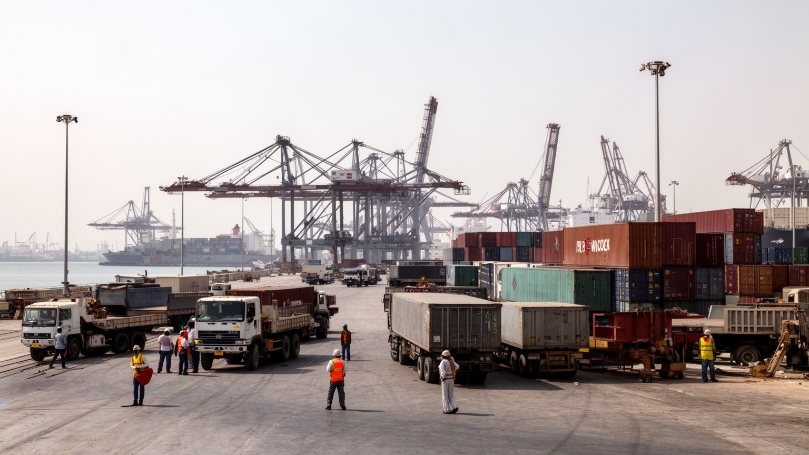
カラチ港とポート・カシムは、海から入った貨物をインダス流域、パンジャーブの工場、内陸の市場、アフガニスタン方面へ送り出す大きな物流装置です。コンテナ、燃料、穀物、機械、繊維原料、消費財は、税関、倉庫、保険、銀行、船舶代理店、トラック業者の連携で動きます。港湾の効率は遠い工場の納期や市場の物価に直結し、渋滞や治安、燃料価格、通関の遅れは都市の外まで影響を広げます。臨海部には工業地帯、漁港、軍事施設、低所得住宅、高級開発が近接し、海沿いの土地を誰が使うのかという争いも起きます。港の仕事は荷役だけではありません。夜間の運転、修理、清掃、事務、警備、食堂、廃品回収まで含む広い労働の網が、海上貿易を日常の収入へ変えています。物流が伸びるほど道路の混雑と大気汚染は重くなり、沿岸住民の環境負担も増します。カラチを港湾都市として読むには、クレーンの景観だけでなく、港から出るトラックの列、倉庫街の賃金、港湾労働者の安全、魚を扱う市場の朝を同時に見る必要があります。港は国家経済の入口であり、住民の仕事場であり、海岸の未来を決める政治的な場所でもあります。輸送を支える道路や橋が傷めば、港の能力はすぐに都市全体の弱点になります。物流の遅れは店頭価格と家計にも届きます。港の混雑は、遠い街の工場にも家族の買い物にも波紋を広げます。
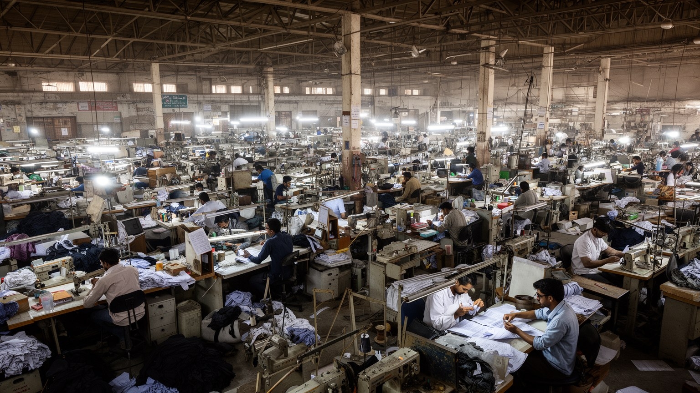
カラチはパキスタン経済の実務が集中する都市です。銀行、証券取引、保険、商社、海運、広告、テレビ、新聞が都心部に集まり、その周辺に繊維、衣料、食品加工、化学、医薬品、印刷、自動車部品、倉庫、卸売市場が広がります。港に近いことは輸出入だけでなく、原材料の調達、為替、信用状、通関、運送契約、保険の仕事を生みます。大企業の本社と小規模工場、正式な労働契約と日雇い、近代的なオフィスと家内工業が同じ都市圏でつながっている点が特徴です。繊維産業は女性労働や低賃金労働、技能、輸出市場の変動と深く結び、物流は燃料価格、道路混雑、治安、港の処理能力に左右されます。カラチの富は高層ビルだけでなく、港で働く人、トラック運転手、縫製工場の作業者、清掃員、露店商、事務員の反復作業によって支えられます。経済規模を語るときは、金融街の数字と同時に、工業地帯の安全、賃金、電力、水、通勤を見なければなりません。競争力は安い労働だけでは長続きせず、働く人が健康に住み続けられる条件と一体です。カラチの産業は、国家の外貨獲得と都市住民の生活費を同時に背負う重い装置です。停電や水不足が工場を止めれば、輸出の遅れは賃金と家計に直結します。産業政策はインフラ政策でもあり、労働者の生活政策でもあります。輸送の遅れは信用の損失や小売価格の上昇にもつながるため、産業の強さは都市インフラの信頼性と切り離せません。
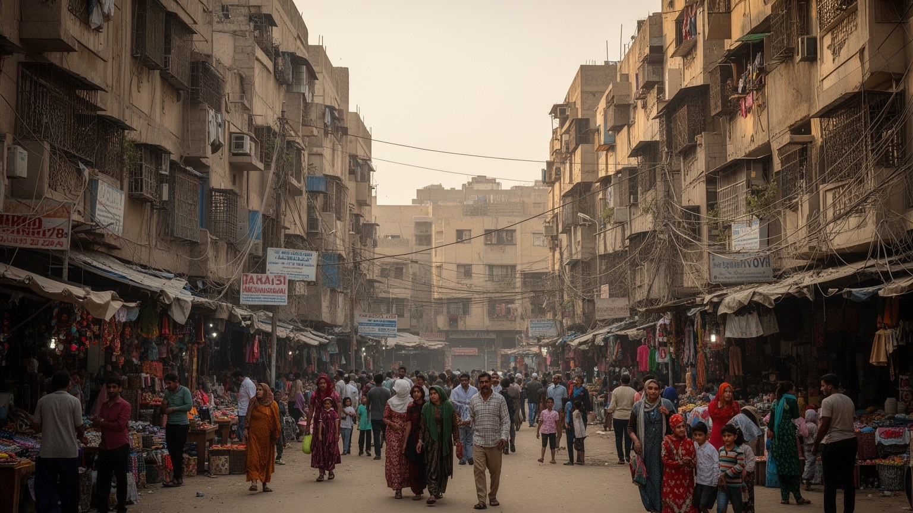
カラチは移民によって大きくなった都市です。分離独立後に北インドから移ったムハージル、シンド地方の住民、パシュトゥン、バローチ、パンジャーブ系、グジャラート系、アフガン難民、国内各地からの労働者が、それぞれの言語、食、政治組織、商売の網を持ち込みました。都市の地区名、商店街、学校、結婚式、新聞、交通ルートには、その移動の記憶が残ります。多様性は活力である一方、民族政党、治安機関、土地権利、雇用、警察、非公式居住地をめぐる緊張も生んできました。カラチでは、誰がどの地域に住み、どの仕事に就き、どの言語で行政や学校へ接するかが、生活機会を左右します。移民都市の強さは、仕事を求める人を吸収する柔軟さにありますが、その受け皿の多くは低賃金、無登録住宅、脆弱な水道、長い通勤に依存しています。都市の成長を人口の大きさだけで見ると、移動してきた人の不安定さが見えません。カラチの街路を読むには、港や金融街と同じくらい、バス停、賃貸部屋、路上商売、家族送金、言語の混在を見なければなりません。移民が都市を作り、都市がまた新しい移民を呼び込む循環が、カラチの社会を動かしています。地区ごとの記憶は政治的な境界にもなりますが、災害時の助け合いや商売の信用を作る基盤にもなります。名前と出身地は、仕事の入口にもなる。
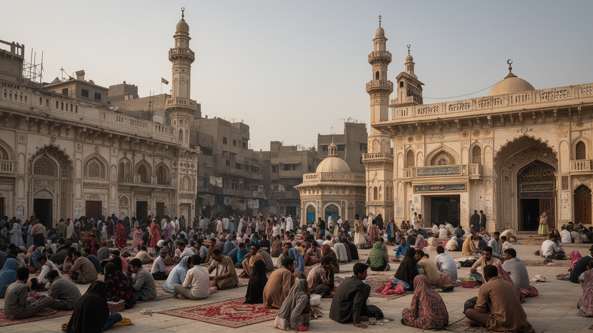
カラチの宗教生活は、モスクの礼拝だけではなく、霊廟、巡礼、断食月、慈善、葬送、結婚式、近隣の助け合いとして街に現れます。アブドゥッラー・シャー・ガーズィー廟のような聖者信仰の場所は、祈り、音楽、施し、家族の外出が重なる都市の節目です。スンナ派とシーア派、スーフィー的な実践、宗教学校、慈善団体、宗派を越えた近所付き合いが同じ都市に存在し、祭日や追悼行事は交通、警備、商売のリズムにも影響します。少数派のキリスト教徒、ヒンドゥー教徒、ゾロアスター教徒の記憶も、学校、墓地、旧市街の建築、商業の歴史に残っています。宗教は統合の力であると同時に、宗派対立や政治動員の場にもなり得ます。だからカラチの信仰を読むには、壮大な礼拝施設だけでなく、日々の寄付、食事の配布、家族の法事、女性の移動、少数派の安全、警備の緊張を見る必要があります。祈りの時間は市場の開閉や通勤を変え、ラマダンの夜は食と商業の時間を変えます。宗教的な暦は、巨大都市の匿名性の中で人を結び直す仕組みであり、同時に多様な住民が距離を測る繊細な場でもあります。カラチでは信仰が都市の公共性を作る重要な言語になっています。災害や貧困の時には、宗教団体の食事配布や診療支援が公的制度の隙間を埋めることもあります。信頼の網は近所の安全にもつながります。
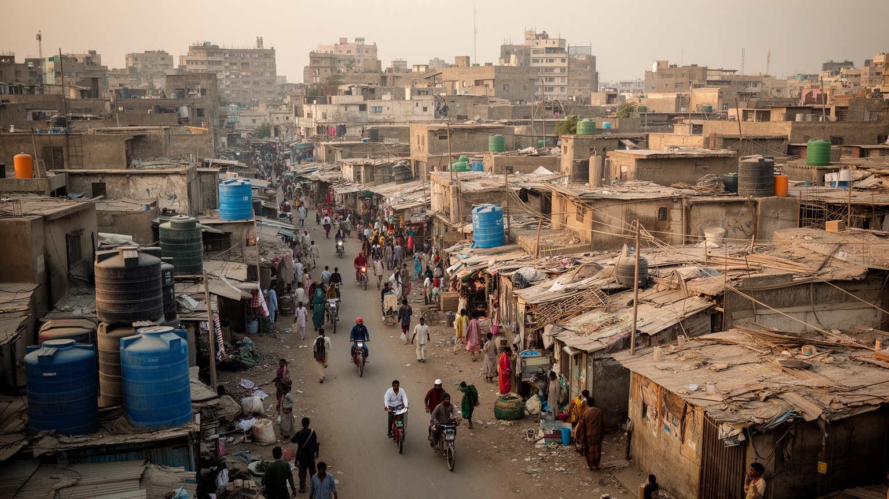
カラチの日常生活で最も重い課題の一つが、住まいと水です。急速な人口増加に対して公的な住宅供給や上下水道の整備は追いつかず、計画住宅地、高級地区、古い市街地、非公式居住地が大きな格差を持って広がっています。水道が不安定な地域では、貯水槽、給水車、井戸、民間業者に頼る生活になり、家計の負担と衛生リスクが増します。排水が弱い地区では、短い雨でも道路が冠水し、下水、廃棄物、感染症、通勤の遅れが生活を直撃します。住宅の安全性も重要です。低所得層は港や工業地帯に近い場所、川沿い、排水路沿い、鉄道沿いに住むことが多く、立ち退きや洪水、火災の危険を抱えます。一方で、防犯と快適さを備えた囲い込み型の住宅地は、都市の分断を強めます。カラチで暮らすことは、どの地区で水を得られるか、停電時にどう過ごすか、学校や職場へ何時間かかるか、家賃が収入をどれだけ圧迫するかという具体的な条件に左右されます。都市の発展を道路や高層ビルで測るだけでは、台所の水、夜の安全、トイレ、排水、廃棄物の問題を見落とします。住まいと水を整えることは、貧困対策であると同時に、都市全体の健康と経済を守る基礎です。女性や子どもにとって水汲み、トイレ、夜道の安全は尊厳に関わる問題で、住宅政策の中心に置かれるべき条件です。水の不安は学習時間も削ります。
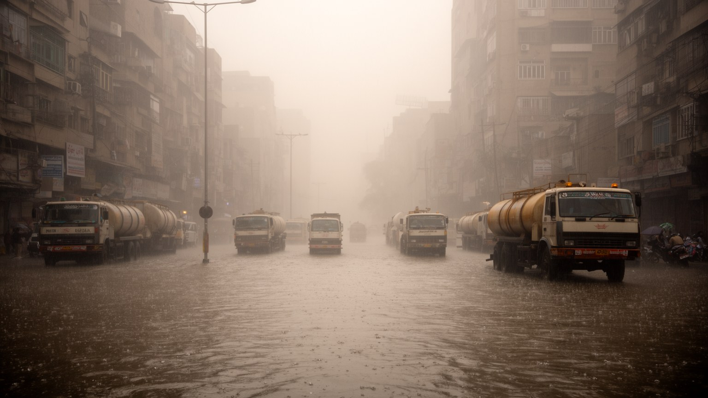
カラチは乾燥した暑さと海風、短い雨季、湿度、熱波にさらされる都市です。気候変動によって暑熱は健康リスクを高め、屋外労働者、露店商、交通労働者、高齢者、子ども、エアコンを使えない世帯に大きな負担をかけます。水不足は慢性的で、給水の不公平、地下水、民間給水、漏水、汚染が生活と産業を揺さぶります。一方で雨が降ると、排水路の詰まり、廃棄物、非公式居住地の立地、舗装の広がりによって冠水が起きやすくなります。乾いた都市でありながら洪水に弱いという矛盾が、カラチの気候リスクです。海面上昇や高潮、沿岸侵食、マングローブの減少も、港湾、漁業、海岸住宅、低地に影響します。災害への備えは堤防や排水設備だけではなく、涼める公共空間、緑陰、早期警報、医療、避難情報、廃棄物管理、貧困層の安全な住宅と結びついています。都市の脆弱性は自然条件だけで決まるのではなく、誰が危険な場所に住まざるを得ないか、誰が水や電力を買えるかで変わります。カラチの気候対策は、環境政策であると同時に社会政策です。暑さと水をめぐる不平等を減らせるかが、港湾都市としての未来を左右します。学校、職場、交通事業者が熱波時の休息や給水を用意できるかも、生死を分ける都市運営の課題です。日陰の少なさも危険を広げ、停電時には室内も安全とは限らないため、暑熱対策は住まいと労働の両方から考える必要があります。
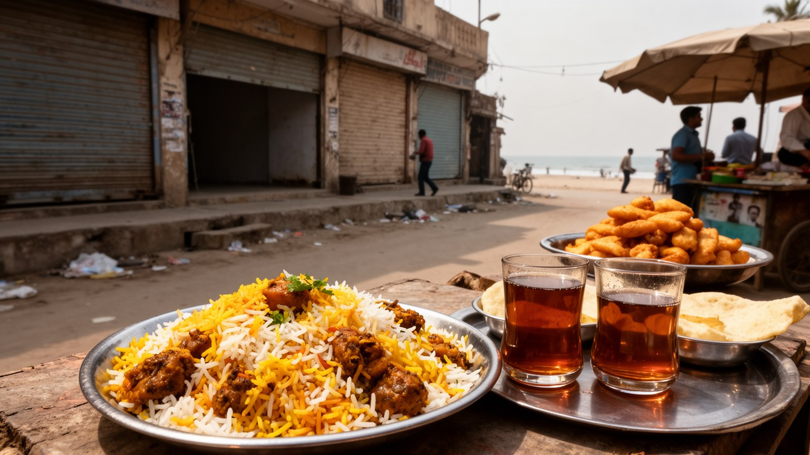
カラチの文化は、港町らしい混ざり合いから生まれます。ウルドゥー語、シンド語、パシュトー語、バローチ語、グジャラート語、英語が街で交差し、テレビ、映画、新聞、音楽、スタンダップ、詩、結婚式の音楽、大学の議論が都市の表情を作ります。食文化は特に分かりやすい入口です。ビリヤニ、ニハリ、カラヒ、ケバブ、チャート、ハリーム、魚料理、甘い茶、深夜の屋台は、移民の記憶と労働者の食事を同時に運びます。高級レストランや海岸のカフェだけでなく、工場の昼食、バス停の軽食、断食明けの食卓、市場の香辛料が都市の味を作っています。メディア産業も大きく、ニュース、ドラマ、広告、音楽は全国へ発信され、政治や宗教、ジェンダー、階級をめぐる議論の場になります。カラチの文化は明るく多声的ですが、検閲、治安、階級差、女性の移動の制約、創作現場の不安定さも抱えます。都市文化を観光向けの料理や海岸の風景だけで語ると、制作、配達、調理、清掃、夜勤の人びとが見えなくなります。カラチの魅力は、違う出自の人が同じテーブル、同じ市場、同じテレビ画面を共有しながら、時に緊張し、時に新しい表現を作るところにあります。大学、出版社、民間劇場、オンライン発信は若い世代の議論を広げ、保守的な規範と都市的な自由の間に新しい余地を作ります。味は記憶です。
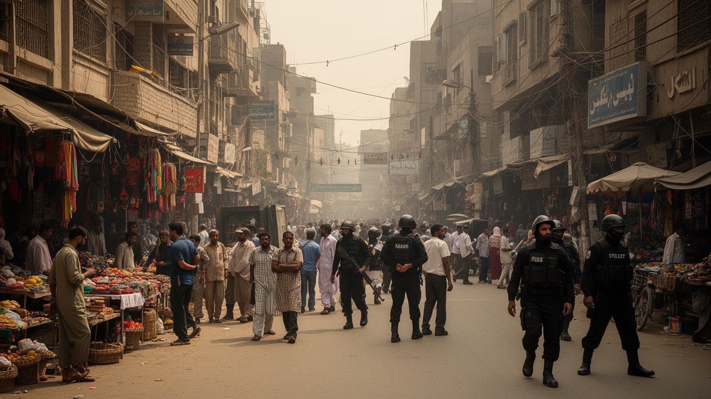
カラチの都市記憶には、商業の活気だけでなく、政治的暴力、宗派対立、犯罪、軍や警察の作戦、誘拐や標的殺害への不安が刻まれています。民族政党、土地利権、港湾経済、武装組織、治安機関が複雑に絡んだ時期には、地区ごとの移動や夜の営業、学校、報道、労働組合の活動まで影響を受けました。近年は治安が改善したと語られる場面もありますが、住民の記憶には、どの道を避けるか、何時に帰るか、どの地区で誰と話すかという細かな判断が残っています。治安は観光客向けの注意事項にとどまらず、女性の通学、少数派の礼拝、露店の営業、ジャーナリストの取材、労働者の帰宅を左右する生活条件です。同時に、カラチは暴力だけで語れない都市でもあります。霊廟、大学、新聞社、劇場、市場、海岸、食堂は、人びとが公共空間を取り戻してきた場所です。恐怖の記憶を隠すのではなく、なぜ都市が分断され、どのように回復してきたのかを見ることで、カラチの強さが分かります。安全は警備の多さだけでは測れません。信頼できる交通、明るい通り、公正な警察、雇用、教育、宗派や民族を越えた近所の関係がそろって初めて、都市は住民に開かれます。記憶を持つ街だからこそ、公共空間の小さな安心が大きな意味を持ちます。海風の中の夕方の外出も、平穏の証しです。安全への感覚は毎日の行動を形づくります。
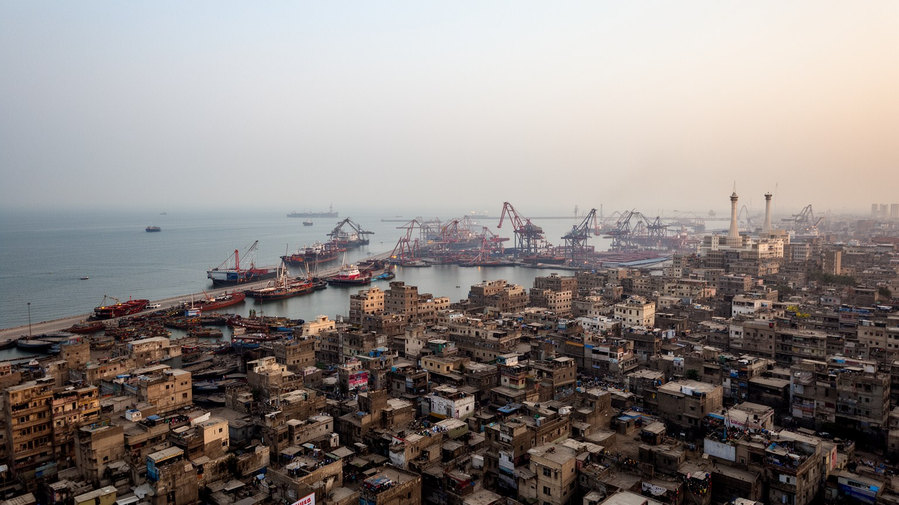
カラチは、世界都市を金融や観光だけで測れないことを教える都市です。港、証券取引、繊維輸出、移民労働、宗教行事、海岸の余暇、非公式住宅、水不足、治安、洪水が、同じ都市圏の中で強く結びついています。ニューヨークやロンドンのような金融中心とは違い、カラチの国際性は港、送金、移民、低賃金労働、海上物流、湾岸との関係を通じて現れます。国家経済を動かす力がある一方で、住民の多くは水、交通、家賃、停電、教育、安全に苦労しています。この落差を見ずに経済規模だけを評価すると、都市の実態を誤ります。カラチの強さは、人と商品を吸収し続ける柔軟さ、多様な文化を混ぜる力、海へ開く商業感覚にあります。弱さは、制度整備が成長に追いつかず、貧困層や移民に負担を押しつけやすい点にあります。だからカラチを読むには、港湾のクレーン、金融街のビル、霊廟の祈り、工場の作業台、路上の茶店、冠水した道路、海岸の夕方を一つの地図に重ねる必要があります。南アジアの都市化、気候リスク、宗教と政治、非公式経済、グローバル物流の交差点として、カラチは現代都市の矛盾を鮮明に見せています。豊かさと脆さが同じ海風の中にあることが、この都市の核心です。都市の評価は、港の処理量だけでなく、住民が水を得て安全に移動し、文化を作り続けられるかで決まります。